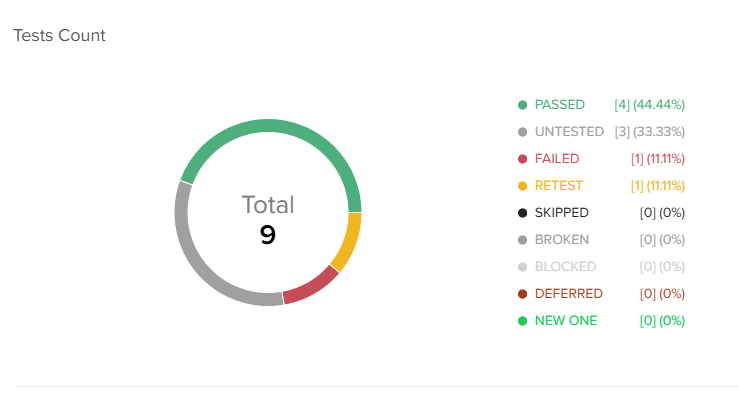
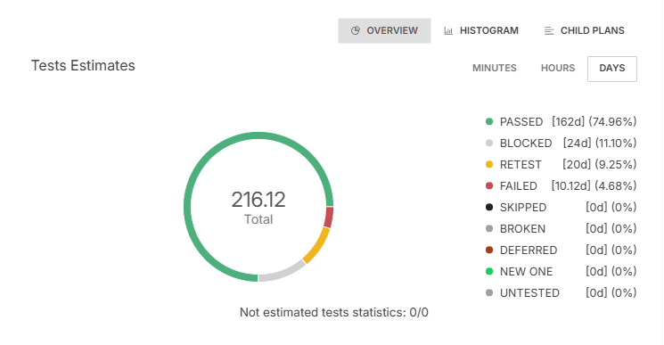

Обзор вкладок
Вкладка Overview
Вкладка является основной в разделе Test Plans & Results. На вкладке представлены:
Описание тестового плана (при наличии);
Блок статистики;
Фильтр и настройки представления;
Табличное или древовидное представление тестов в тест-плане.
{kind=link}
Раздел Statistics
В блоке статистики представлены две кольцевых диаграммы, а также доступно переключение на представление данных в виде гистограммы:
Если тест-план не выбран, блок статистики включает в себя сводную статистику по всем тест-планам в проекте, а табличное/древовидное представление тестов содержит все тесты из всех тестовых планов.
Если тест-план выбран, статистика включает в себя сводную статистику по всем тестам в этом тестовом плане и тестовых планах дочерних к нему. Табличное/древовидное представление соответственно содержит все тесты от выбранного тест-плана.
Tests Count
Кольцевая диаграмма показывает статус прохода тест-плана:

Сегменты диаграммы соответствуют статусам последних результатов, добавленных к тестам в тест-плане. Размер каждого сегмента соответствует проценту тестов, находящихся в определенном статусе, от общего количества тестов в тест-плане.
В центре диаграммы отображается общее количество тестов в тест-плане. Условные обозначения диаграммы включают в себя все добавленные в проект статусы тестовых результатов, отсортированные по количеству тестов, которые находятся в каждом конкретном статусе. Напротив статуса в скобках указаны количество тестов и процент от общего количества.
Test Estimates
Кольцевая диаграмма показывает общую временную оценку для оцененных тестов в тест-плане. Справа над диаграммой доступен выбор единиц измерения (минуты, часы, дни):

В диаграмме учитываются только оцененные тесты. Статус выполнения тестов, у которых нет оценки, отображается под диаграммой в блоке Unestimated Tests Statistics (Неоцененная статистика тестов) в формате N/M, где N — это количество неоцененных тестов в статусе, отличном от UNTESTED; M — общее количество неоцененных тестов.
Сегменты диаграммы соответствуют статусам последних результатов, добавленных к тестам в тест-плане. Размер каждого сегмента соответствует проценту оценки тестов, которые находятся в определенном статусе, от общей оценки тестов в тест-плане.
В центре диаграммы отображается общее оценка тестов в тест-плане. Легенда диаграммы включает в себя все добавленные в проект статусы тестовых результатов, отсортированные по оценке тестов, которые находятся в каждом конкретном статусе. В скобках около статуса указаны оценка тестов и процент от общей оценки.
Tests Count Histogram
Гистограмма строится для результатов тестов, которые находятся в выбранном диапазоне времени. Выбор диапазона времени осуществляется в верхнем правом углу гистограммы.
В отличии от кольцевых диаграмм, гистограмма содержит не только последние результаты тестов, но и все результаты, которые были добавлены к тестам в рамках проходов тест-плана:
На оси Y отражено количество результатов;
На оси X по умолчанию отражены результаты, распределенные по датам добавления. Отображаемые результаты могут быть настроены.
В качестве значения, по которому группируются результаты на оси X, может быть использован любой атрибут результата. Подробнее об атрибутах тестового результата можно прочитать в соответствующем разделе.

Child Plans
На вкладке Child Plans отображатеся прогресс выполенения первого уровня тестовых планов, которые являются дочерними к выбранному.
{kind=link}
Доступно два варианта просмотра статистики:
Count
Estimates
Count - статистика строится по общему количеству тестов в плане.
Estimates - статистика строится по тестам в плане, у которых заполнено поле Estimates; для тестов с незаполненным полем, считается количество тестов, которые находятся в каком-либо статусе.
Статистика по дочерним планам также доступна в древовидном представлении тестпланов/тестов:
Краткая информация по количеству тестов, которые находятся в статусе отличном от UNTESTED, отображается в колонке Last Status для каждого тестового плана в дереве.
Клик на иконку статистики открывает всплывающее окно с распределением тестов по статусам.
{kind=link}
Вкладка Activity
На вкладке доступна информация о событиях добавления/изменения/удаления тестовых результатов, сгруппированных по дате:
{kind=link}
Пользователю доступны фильтрация и поиск по всем датам и в рамках каждой конкретной даты. Чтобы очистить условия фильтрации и поиска, нажмите Clear Filters and Sorters:
{kind=link}
Вкладка Custom Attributes
На вкладке доступны для просмотра пользовательские атрибуты, заполненные при создании или редактировании тестового плана:

Вкладка Attachments
На вкладке представлены вложения, добавленные к тестовому плану:
{kind=link}